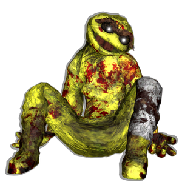

Golden Grouch
背景

一套有自我意识的吉祥物服装，被名为“The Deity”的神秘实体赋予生命。该实体是一名以太 Soul Weaver。服装里的灵魂属于一名极端物质滥用者。
在未知第三方的帮助下，该实体被 Golden Galaxy Gas 强化，获得了随意发动杀戮狂潮的力量与手段。
策略
Golden Grouch 战斗由 2 个子阶段，也就是姿态组成：剑姿态和徒手姿态。两个子阶段拥有完全不同的招式组。每场战斗一次，当 Golden Grouch 低于 70% HP 时，他的剑会被打飞，切换到徒手姿态。剑会作为被动实体留在 Gate 旁边。徒手姿态中，Golden Grouch 可以使用一个招式召唤 6 个 Shadow Grouch 敌人。该招式最多可使用 2 次。
Shadow Grouch 的 HP 会衰减，每秒失去其最大 HP 的 3%。每 10 秒，每个 Shadow Grouch 都会给予 Golden Grouch 短暂的 INVINCIBLE 状态效果。
徒手姿态下 HP 低于 40% 后，Golden Grouch 会开始跑向掉落的剑，拾起它并切回剑姿态。剑姿态下，当 Golden Grouch 低于 50% HP 时会拥有扩展招式组。
统计
基础 HP：18500
伤害：物理和暗影
| 属性 | 抗性 |
|---|---|
| 物理 | 中性 (1x) |
| 火焰 | 弱点 (1.25x) |
| 冰霜 | 抗性 (0.75x) |
| 电击 | 抗性 (0.55x) |
| 光耀 | 弱点 (1.5x) |
| 暗影 | 中性 (1x) |
| 毒 | 抗性 (0.5x) |
趣闻
Golden Grouch 最初只是一个玩笑，一个关于“如果你有各种 Five Nights at Freddy’s 版本的 Grouch 会怎样”的“假如”想法。Mantibro 和 ruralist 花了将近一个小时，一边不断列出更多版本，一边笑到喘不过气。